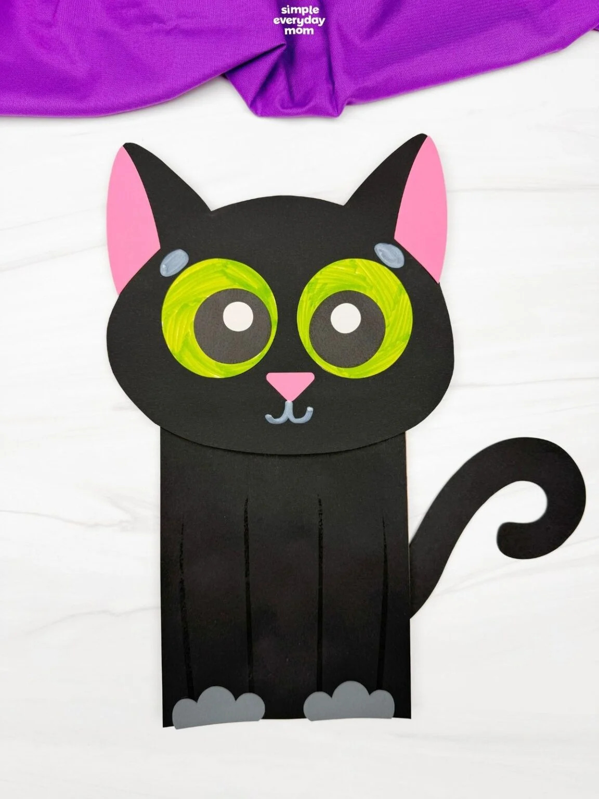
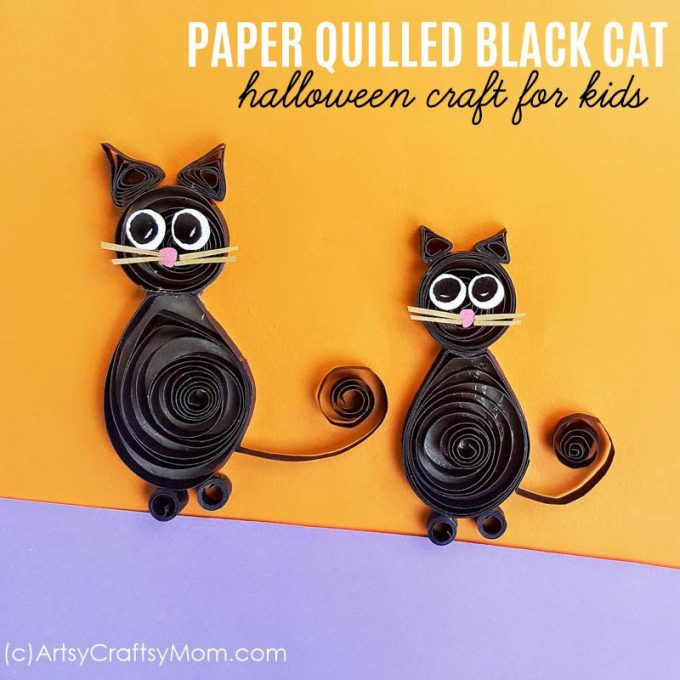

･:*࿔ೃ.⋆ Cozy Fall Cat Craft ⋆.ೃ࿔*:･
THIS IS WHAT YOU'LL NEED
White oil pastel or crayon
Scrap piece of white paper (for eyes)
12" x 9" painted paper or colors paper for scarf
6" x 6" scrap paper for object (orange paper for pumpkin)
Oil pastels for detail work
*optional Rick-Rack and Pom-Poms
STEP 1: Cutting Out The Cat
Fold the black paper in half lengthwise. With the fold facing the center, draw a curved line for the top of the cat’s head. Add an ear and cheeks. Children can stop short or draw all the way to the folded line.
Draw the cats body by starting at the cheeks, drawing a curved line towards the edge (how far determines how thick the cat will be) and then down off the bottom edge of the paper.
Cut out shapes with scissors.
Open up the flatten out.
STEP 2: Making The Pumpkin
On the 6″ x 6″ orange paper, draw a pumpkin. Make sure the pumpkin fits inside the cats body. It shouldn’t be too big or else the paws won’t be able to hold on.
Cut out the pumpkin and set aside for now.
STEP 3: Making The Paws
Place pumpkin over body. With a white pastel, make a small mark next to the thickest part of the pumpkin.
Remove pumpkin. Fold cat in half and notice where the pumpkin mark is. Draw a curved line to mimic a cat’s paw (letter C). The round part of the “C” should face the folded part of the paper.
Draw a line down to the bottom of the cat (refer to handout)
Cut along white line.
STEP 4: Adding The Pumpkin And Face
Open up cat and insert the pumpkin between the cat’s paws. It may take some wiggling to get it right. Turn over the cat carefully and tape pumpkin in place.
Now’s a good time to tape the cat together below the paws. Do this on the BACK of the cat’s body.
Cut out two eyes from the white paper and draw and color the pupils. Add a nose and mouth with the white oil pastel. Use the pastel to add whiskers and eye lashes.
Use chalk pastel to add color inside the ears and add color to the cheeks.
STEP 5: Adding The Scarf And Embellishments
Place the large sheet of painted paper over the cat’s body just below the chin. Make a mark where the cat’s body ends. This is how wide to draw the scarf.
The scarf is in two sections: the wrap and the tail. The wrap can have rounded corners and the tail can be curved to show movement. Glue the tail first then the wrap.
Decorate with pom-poms and oil pastel.
Use rick-rack, painted paper strips or anything you might have on hand to decorate the cat’s body.
YOU'RE DONE! :D
･:*࿔ೃ.⋆ Black Cat Puppet Craft ⋆.ೃ࿔*:･

THIS IS WHAT YOU'LL NEED
Colored cardstock or construction paper
STEP 1: Print Out The Template and Cut
Start by downloading the template and printing it out. Once the template is printed, gather the materials for this fun activity. Get those scissors ready, and let’s help the kids bring cat to life!
STEP 2: Glue Eyes/Ears
Glue the eyes to the center of the cats face.
Next, glue the inner ears to the outside of the outer ears.
STEP 3: Glue Nose & Draw Mouth
Place the nose below the eyes and glue it in place.
Now, use a Bold & Bright white marker to help draw the mouth of the black cat below the nose.
STEP 4: Draw Eyebrows & Glue Body
draw the eyebrows on top of the cats eyes.
Glue the body to the main portion of the paper bag.
STEP 5: Glue Paws & Tail
Position the paws on the bottom portion of the body and glue them in place.
Next, glue tail on the back and right side of the body, in between the two sides of the bag.
STEP 6: Glue Head and Bag Together
Finally, glue the head to the flap portion of the bag.
YOU'RE DONE! :D
･:*࿔ೃ.⋆ paper Black Cat Craft ⋆.ೃ࿔*:･

THIS IS WHAT YOU'LL NEED
Craft paper - white, pink and brown
STEP 1: Cutting Out the Basic Shapes
Take a 20 inch long (or longer) 5mm quilling strip and create a loose coil shape with it; this will be the body of the cat. Take a 10-inch long strip and create another loose coil shape; this will be the head. Use 4-inch strips to create 2 tight coil shapes (the legs), 2 triangle shapes (the ears) and 1 strip with half of its length coiled (the tail).
STEP 2: Cutting & Drawing Out the details
Use scissors to cut out 2 small round shapes from white craft paper for the eyes, 1 really small circle shape for the nose from pink craft paper and 4 really small strips of beige paper for the whiskers. Use a black sharpie to draw the eye on the circle cutouts.
STEP 3: Making the Body
Take the big loose coil (made from 20 inches long strip) and pinch one side to form a teardrop shape. Now press another point 1 cm from the previous one to form a flat top. This shape will be the body of the Paper Quilling Black Cat.
STEP 4: Attaching the Big Parts
Prepare a dark-colored craft paper and apply glue on it tracing the body and the head of the Paper Quilling Black Cat.
STEP 5: Placing Body on Paper/Cutting Paper
Now, gently place the quilled body part below the small loose coil shape (head) on the glued paper. Allow the glue to dry.
Once the glue dries use scissors to cut the paper around the borders of the quilled parts.
STEP 6: Attaching Everything Together
Attach the tail on the side of the body, near the bottom. Lastly, attach the ears, feet, eyes, whiskers & nose on the quilled head of the cat. Allow the glue to dry completely.
YOU'RE DONE! :D